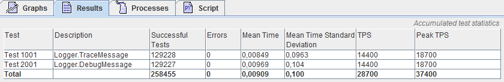

The GrinderScript.Net NuGet samples package contains some ready to use examples. You should install the package into your load test project before you proceed, so you have some living code to play with while you read this. You install the sample package the normal NuGet way, from the Visual Studio NuGet Package Manager:
install-package GrinderScript.Net.Samples
A load test class is called a Worker in GrinderScript.Net. The Grinder will spin up as many instances of your worker class as you specify with the grinder.threads property in your grinder.properties file. It will also control the lifetime of these instances for you. You can safely use member variables to store state used by your test methods, as long as you dont start to do you own thread management inside your worker instance.
At its core a Worker type must implement the GrinderScript.Net.Core.IGrinderWorker interface:
public interface IGrinderWorker
{
void Initialize();
void Run();
void Shutdown();
}
You will probably not implement this interface from scratch, since GrinderScript.Net comes with several base classes you can inherit from. Still, its good to know that the life cycle of an IGrinderWorker, which is
When you register a test method in GrinderScript.Net it will be proxied by The Grinder as a JVM object that is returned to you as an IGrinderTest instance. Each time you call Run() on this proxy The Grinder will call your method, time the call duration, and update its statistics with the call metrics. A test method is just an Action, so any zero argument void method or lambda expression can be used. From each Run() you can call as many test methods as you need and also call them in loops if that makes sense in your test scenario.
The easiest way to write a load test is to extend GrinderScript.Net's GrinderScript.Net.Core.DefaultWorker. DefaultWorker will help you manage the worker life cycle and test registration described above. Here is an example of a simple load test extending the DefaultWorker:
public class WorkerThatLogs : DefaultWorker
{
protected override void DefaultInitialize()
{
AddTest(1001, "Logger.TraceMessage", TraceMessage);
AddTest(2001, "Logger.DebugMessage", DebugMessage);
}
private void TraceMessage()
{
Logger.Trace("Example trace message");
}
private void DebugMessage()
{
Logger.Debug("Example debug message");
}
}
Here we use the AddTest() utility method to register two test methods, TraceMessage() and DebugMessage() with GrinderScript.Net. For each time The Grinder call our Run() method, the DefaultWorker will call the IGrinderTest proxies for two methods. If you run this test from The Grinder console, your Results tab will look something like this:

| The core of the DefaultWorker is the AddTest() utility method. If takes these arguments six argument, where the forst tree are mandatory | |||
| Name | Type | Description | Default value |
| testNumber | int | This is used by The Grinder to identify each test. The Grinder will accumulate test statistics for each test number. The Grinder allow you to register several test methods with the same test number, so you should make your own routine if you have special requirements regarding test numbers. The test number shows up in the The Grinder Console Results tab in the Test column. This argument is mandatory. | None |
| testDescription | string | A human readable description of the test. The Grinder Console will display this in the Description column of the Results tab. This argument is mandatory. | None |
| testAction | Action | The actual test method that will be called with instrumentation. This argument is mandatory. | None |
| beforeTestAction | Action | If provided, this method will be called without instrumentation before the actual test method is called. Her you can perform test fixture setup, without impacting the metrics for the test. | null |
| afterTestAction | Action | If provided, this method will be called without instrumentation after the actual test method is called. Her you can perform test fixture cleanup, without impacting the metrics for the test. | null |
| sleepMillis | int | How many milliseconds should The Grinder sleep after this test method is called? You can use normal Grinder properties grinder.sleepTimeFactor and grinder.sleepTimeVariation to control this sleep time during your load test runs. | 1000 |
Sometimes you want to call the same method several times from a load test. The DefaultWorker has an AddTest() overload for helping with this. This overload takes an already proxied test method as the only argument. Here is an extension of the example above, where the TraceMessage() is added twice:
protected override void DefaultInitialize()
{
var traceMessageTest = AddTest(1001, "Logger.TraceMessage", TraceMessage);
AddTest(2001, "Logger.DebugMessage", DebugMessage);
AddTest(traceMessageTest);
}
With this test setup each call to Run() will perform the test sequence TraceMessage(), DebugMessage(), TraceMessage(), so your load test will perform twice as many TraceMessage() calls as DebugMessage() calls.
| Beside the mandatory DefaultInitialize() described above, DefaultWorker also provide these extension tree points | |
| Method | Description |
| DefaultBeforeRun() | This method is called for each Run(), before all the tests you've added with AddTest(). You can use this method if you have some test fixture setup you need to perform before each Run(). |
| DefaultAfterRun() | This method is called for each Run(), before all the tests you've added with AddTest(). You can use this method if you have some test fixture setup you need to perform before each Run() |
| DefaultShutdown() | This method is called during Shutdown(), after all the test references has been cleared. Her you can close all resources you've hold for the whole load test run. You should also clear all JVM references you hold. |
If you find the DefaultWorker to limiting, GrinderScript.Net also provide an GrinderScript.Net.Core.AbstractWorker that you can extend from. Beside the glue functionality described below the AbstractWorker provide you with tree methods to override, OnInitialize(), OnRun() and OnShutdown(). Hopefully youve picked up when and how to use these methods by now.
| The AbstractWorker provide tree member variables for you to use when writing your load tests. | ||
| Member | Type | Description |
| GrinderContext | GrinderScript.Net.Core.IGrinderContext | This is your bridge to The Grinder it self. You use this to read various load run information, like the grinder.properties, to register test methods for timing by The Grinder and to interact with the sleep functionality in The Grinder. This is a singleton instance living in the JVM, so you must pass this on to any objects you create that need to interact with The Grinder. |
| Logger | GrinderScript.Net.Core.IGrinderLogger | This is a CLR wrapper around a logger instance in the JVM. It makes it possible to integrate your own logging into The Grinder's logs. |
| TypeHelper | GrinderScript.Net.Core.Framework.TypeHelper | As the name indicates, this is a helper object to instantiate a type, either from it's name, or from a value read from the grinder.properties |
As a side note, the DefaultWorker extends the AbstractWorker.
The purpose of a script engine is to create worker instances on demand of The Grinder. Beside that its also notified when the load run process is initialized and shutdown, so it can do any process initialization/finalization work need by your workers. A Script Engine type must implement the GrinderScript.Net.Core.IGrinderScriptEngine interface:
public interface IGrinderScriptEngine
{
void Initialize();
IGrinderWorker CreateWorkerRunnable();
void Shutdown();
}
GrinderScript.Nets default script engine, GrinderScript.Net.Core.DefaultScriptEngine, creates the workers by instantiating the type you configure with the grinderscript-dotnet.workerType property, and is ready for you to use right out of the box. But you might have special process initialization/finalization needs, or need some additional initialization of all your worker instances, or do not fancy using the grinderscript-dotnet.workerType property to specify your worker type. In any of these case you can extend the DefaultScriptEngineor its base class, the GrinderScript.Net.Core.AbstractScriptEngine. Both options p provides you with tree methods to override, OnInitialize(), OnCreateWorkerRunnable() and OnShutdown(). Youve probably figured out what code goes in each method already, if not you can look at the script engine types in the samples code. Below is all the code in the DefaultWorker, as an example of how to override the OnCreateWorkerRunnable().
public class DefaultScriptEngine : AbstractScriptEngine, IDatapoolFactoryAware
{
protected override IGrinderWorker OnCreateWorkerRunnable()
{
Logger.Trace("OnCreateWorkerRunnable: Enter");
var result = CreateGrinderWorkerFromProperty();
Logger.Trace(m => m("OnCreateWorkerRunnable: Exit, result = {0}", result));
return result;
}
public IDatapoolFactory DatapoolFactory { get; set; }
}
You replace the default script engine with your own by using the grinderscript-dotnet.scriptEngineType property in your grinder.properties file, e.g. grinderscript-dotnet.scriptEngineType=GrinderScript.Net.Verifier.Samples.GrinderScript.Net.Core.ScriptEngineThatCreateWorkerByCtor, GrinderScript.Net.Verifier
Extending the DefaultScriptEngine or the AstractScriptEngine is much a matter of taste (beside what makes you the least code to get your work done).
By now you should understand how to write your load tests with GrinderScript.Net. The natural next step now is to learn how to use data pools to varying test data or how to compose workers into load test scenarios. You can also check out the complete list of properties used by GrinderScript.Net.